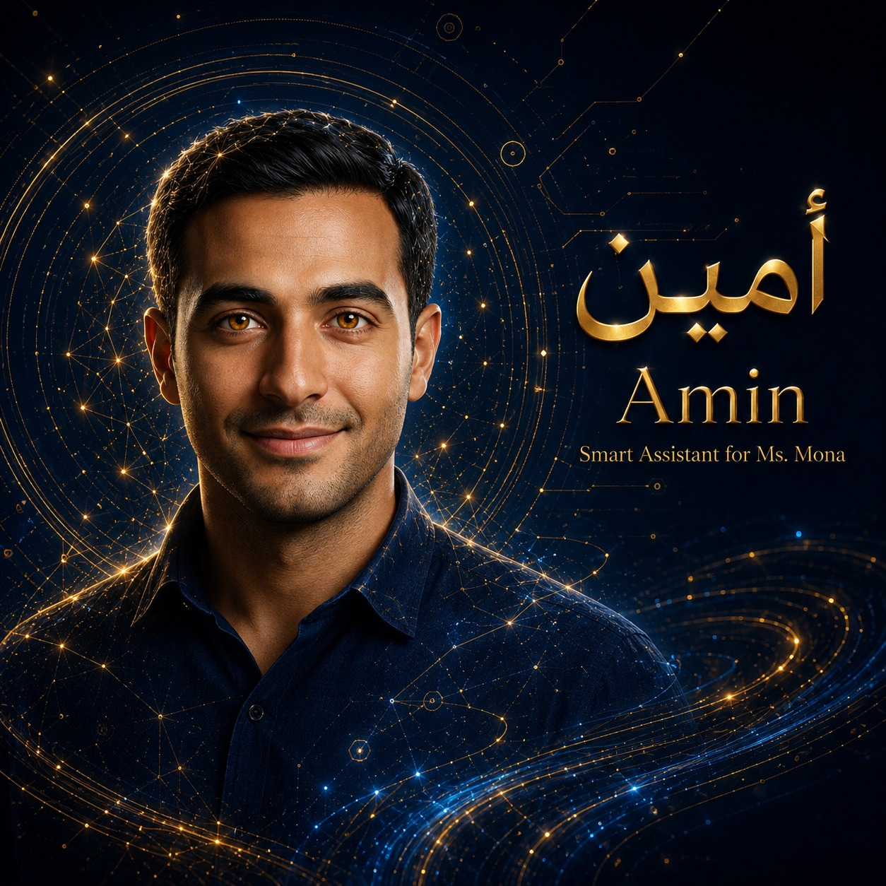

التذكيرات بترن والتطبيق مفتوح — نظام iOS مش بيسمح لتطبيقات الويب تنبّه في الخلفية، وده إفصاح مش عذر. قوليلها لأمين بالكلام وهو هيضيفها بنفسه.
المفاتيح دي بتتسجل على تليفونك بس (localStorage) — ولا بتتبعت ولا بتتحفظ في أي مكان تاني. نفس المفاتيح اللي حطيتيها في أمين على اللابتوب.
لو اللابتوب شغّال وجسره مفعّل من إعداداته، أمين هنا يقدر ينفذ مهام اللابتوب الحقيقية (الملفات ومهامه وذاكرته) عن بعد. حطي نفس مفتاح GitHub ونفس كلمة سر الجسر اللي على اللابتوب بالظبط. لو اللابتوب مقفول، سيبي الوضع ده متوقف وأمين هيشتغل من التليفون نفسه.
لو حطيتي بريد وكلمة سر حساب الإدارة بتاعك، أمين يقدر يدير حسابات البوابة مباشرة على منصة المدرسة (بحث، سرد، إنشاء، تصفير كلمة سر، تفعيل/تعطيل، حذف). البيانات على تليفونك فقط. أي إجراء بيغيّر بيانات هيسألك تأكيد قبل ما ينفّذه — مفيش حاجة بتتعمل من غير موافقتك.
ده بيدّي أمين تحكّم كامل في قاعدة بيانات المدرسة (الطلاب، الأقساط، الحضور، الدرجات… كل التبويبات): قراءة، إضافة، تعديل، حذف. الصق هنا محتوى ملف «حساب الخدمة» (Service Account JSON) اللي هنعمله سوا، وشاركي الشيت مع بريده. التعديل والحذف على بيانات الطلاب والمالية بيسألك تأكيد أول. الملف على تليفونك فقط.
لو حطيتي مفتاح GitHub لمستودع المنصة، أمين يقدر يقرأ كود المنصة ويشخّص أي عطل برمجي، ويقترح الإصلاح كـ Pull Request مراجَع — من غير ما يلمس المنصة الحيّة مباشرة. فتح أي اقتراح بيسألك تأكيد أول.
النسخة دي هي عقل أمين وصوته على تليفونك. المهام والملفات والذاكرة طويلة المدى موجودين على اللابتوب بس — مفيش سيرفر بيربطهم، وده إفصاح مش عذر.